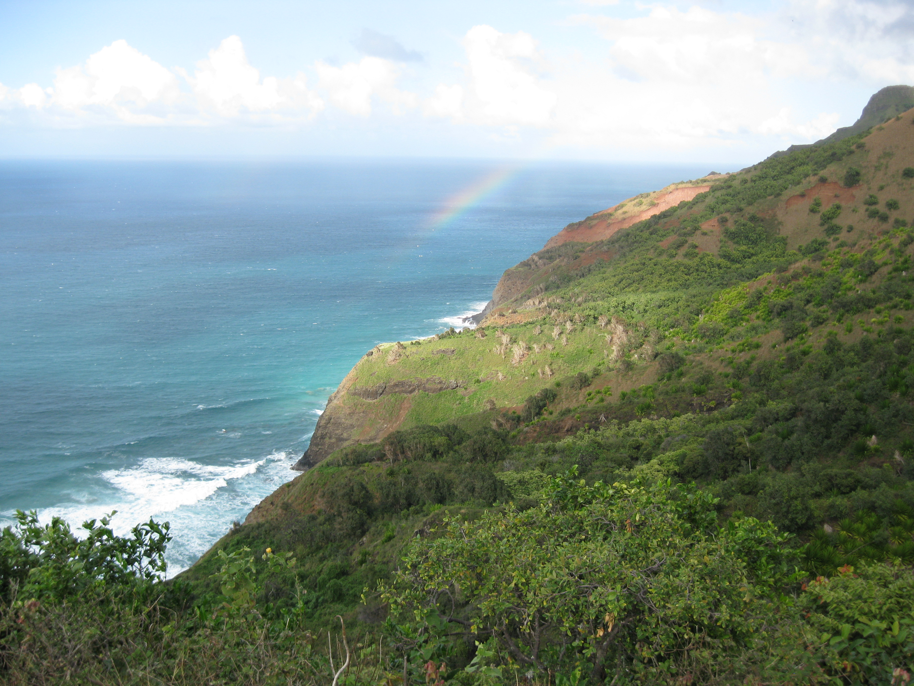

{kind=link}
This is the story of my epic hike in Kauai...
Saturday
Drinking four glasses of wine before packing, sleeping three hours, then driving four hours to the airport at night was not the best way to start my first Hawaii trip. But since this was technically my birthday vacation, I quickly forgave myself. After a nap on the airport floor and two very long flights, I landed in the Garden Isle, Kauai. I could have stopped over in Oahu, the Traffic Jam Isle, to visit another friend, but decided I wanted to six solid days in one place. So I picked Kauai, where two friends from college, Chet and Somer, then lived. The evening I arrived, we relaxed, ate some local fare, and flew a kite on the island's windy East shore.
Sunday
On Sunday 2012-02-19, I body-surfed with Chet and Somer the North Shore and jogged up and down the beach. Later, Chet and I packed our backpacks for our economy but epic trip on the Kalalau Trail to the Napali Coast. He constantly reminded me: pack tight and pack light.
Monday
On Monday, Somer dropped me and Chet off at Kee Beach, at the Kalalau Trail head. The densely-wooded, steep, wooden-stepped trail stared down at me, seeming to say "My Sierra Club 8/10 rating will kick your ass. Enter if you dare." Undeterred, I followed Chet, into the 11-mile charted wilderness. The wide but steep trail looked too much like paradise to be threatening. A steep slope of tropical shrubbery ascended to my right and descended to my right, with a 5-foot wide trail in front of me. A blue sky and bright sun peaked through tall trees above me, and I realized I couldn't have picked a better week or place to vacation.